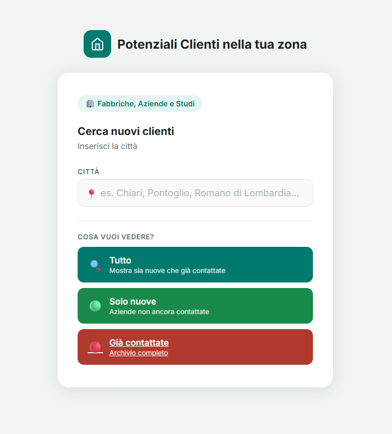
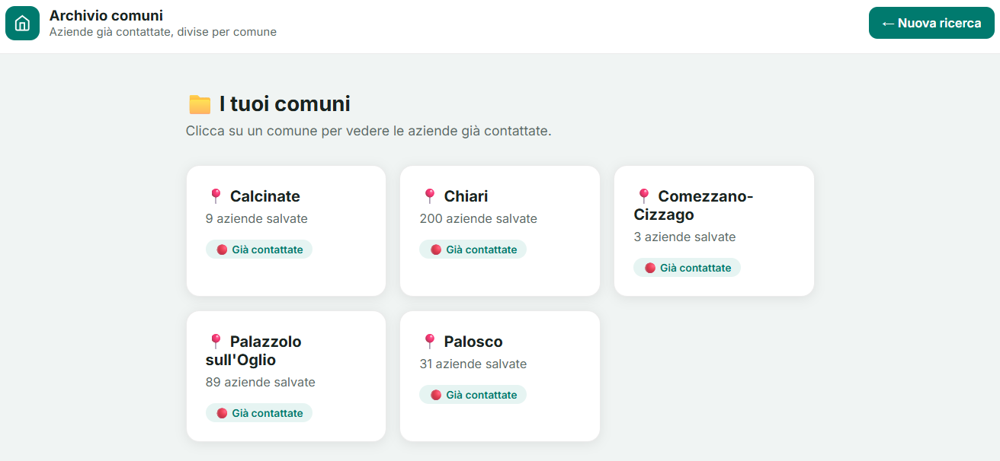

Formazione
Studio Ingegneria Informatica all’Università degli Studi di Brescia e attualmente frequento il terzo anno. Il mio percorso mi sta aiutando a costruire basi tecniche solide e un approccio orientato al problem solving.
Portfolio
Sono uno studente al terzo anno di Ingegneria Informatica presso l’Università degli Studi di Brescia. Nel tempo libero sviluppo progetti web, tool digitali e piccole soluzioni pratiche, con l’obiettivo di fare esperienza, migliorare ogni giorno e costruire competenze sempre più solide.
Ho già realizzato alcuni progetti concreti, ma resto aperto a ambiti diversi: sviluppo web, automazione, AI applicata, software e strumenti utili. In questa fase voglio soprattutto mettermi alla prova, imparare più skill possibili e capire sul campo dove posso dare il meglio.
Profilo
Studio Ingegneria Informatica all’Università degli Studi di Brescia e attualmente frequento il terzo anno. Il mio percorso mi sta aiutando a costruire basi tecniche solide e un approccio orientato al problem solving.
Mi piace trasformare idee concrete in progetti funzionanti. Negli ultimi lavori ho sperimentato siti web, interfacce, tool di automazione e piccoli sistemi utili, cercando sempre un equilibrio tra semplicità, chiarezza e utilità reale.
Sto ancora costruendo esperienza, quindi preferisco restare aperto a più possibilità. Voglio imparare, testare tecnologie diverse e capire con il tempo in quali ambiti specializzarmi davvero.
Competenze
In questa fase del mio percorso preferisco continuare a esplorare più ambiti, lavorare su progetti reali e costruire esperienza pratica su tecnologie diverse.
Progetti
Tool web
Tool web sviluppato per automatizzare la ricerca di potenziali clienti sul territorio. Raccoglie aziende per comune, integra Google Places API e OpenStreetMap e individua mail trovate o generate per facilitare il contatto.
Le aziende possono essere salvate in un archivio organizzato per comune, esportate in PDF e selezionate in una coda di invio. Il sistema permette anche di aprire direttamente il client di posta con i destinatari già precompilati, velocizzando le comunicazioni multiple. La struttura del tool può essere estesa a settori diversi, aggiungendo filtri e criteri di ricerca più specifici.
Oltre alla parte di ricerca, ho lavorato anche su un controllo delle chiamate API per limitare costi e utilizzi imprevisti.


Siti web
Raccolta di template web pensati per piccole attività locali, con struttura chiara, contatti immediati e presentazione semplice dei servizi. L’obiettivo è creare basi riutilizzabili e adattabili a settori diversi.
In questi progetti ho lavorato soprattutto su layout, gerarchia dei contenuti, usabilità mobile e chiarezza visiva.
Contatti